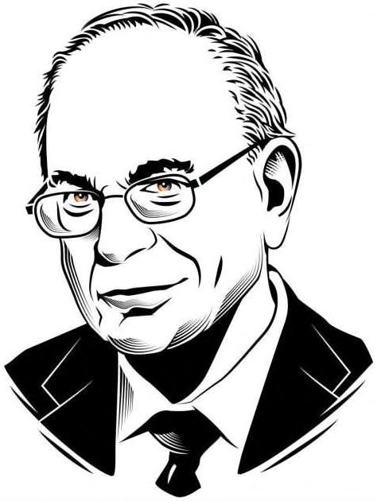

Tiếp theo, hãy nói về phí nhập học. Daniel Kahneman là) KHÔNG CÓ GÌ MIỄN PHÍ Mọi thứ đều có giá nhưng không phải tất cả đều ghì trên nhân Mọi thứ đều có giá, và chìa khóa của rất nhiều thứ liên quan đến tiền chỉ là tìm ra giá là bao nhiêu và sản sàng trả nó. Vấn đề là giá của nhiều thứ không thể hiện rõ cho đến khi bạn nghiệm chúng, khi hóa đơn đã quá hạn thanh toán. General Flec Rồi mọi thứ Cuộc khủng phận cung c mỏ và năng an thành từng mảnh. GE đã giảm từ$40 năm 2007 xuống còn $7 vào năm 2018. Việc đổ lỗi ‹ năm 2001 (ác Vụ mua oảng tài chính năm 2008 đã khiến bộ phận tài chính ấp hơn một nửa lợi nhuận của công ty - rơi vào tìni loạn. Cuối cùng nó đã được bán với giá bèo. (ác vụ đặt cược tiếp tỈ ượng là thảm họa, dẫn đến hàng tỷ đô la bị xóa số. (ổ phiếu của ân mắt trải ric là công ty lớn nhất thế giới vào năm 2004, trị giá 330 tỷ đô la. Đó là tấm gương sáng của chủ nghĩa tư bản về tầng lớp doanh ng lệp lớn. của GÈ - bộ trạng hỗn eo vào dầu o Giám đốc điều hành Jeff Immelt - người điều hàn| à ngay lập tức và gay gắt. Ông bị chỉ trích vì khả năng lãnh đạo, ại, cất giảm cổ tức, sa thải công nhân và — tất nhiên — giá cổ công ty tỪ phiếu lao dốc. Đúng như vậy: những người được ban thưởng bằng sự giàu có
